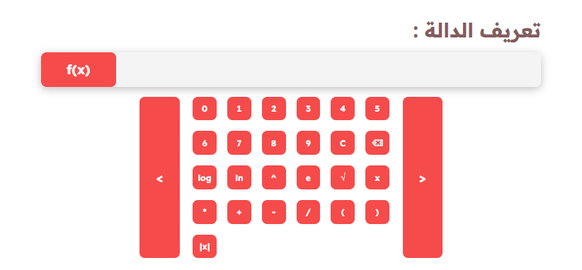
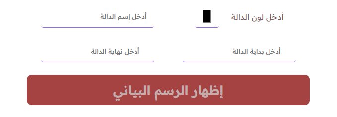
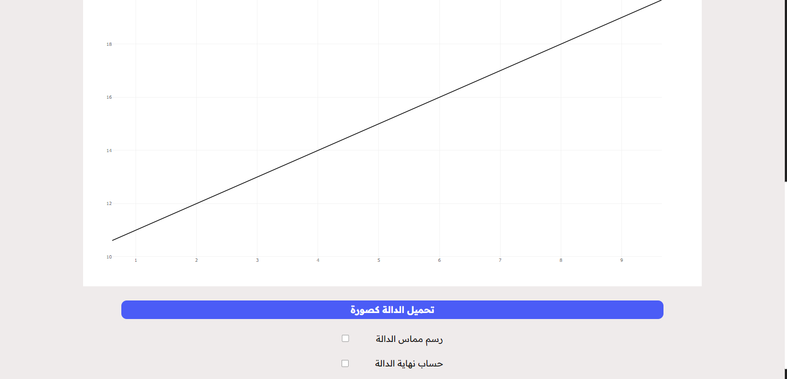
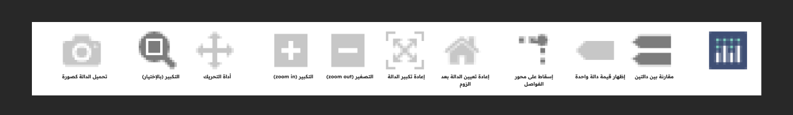

دليل المستخدم
السلام عليكم و رحمة الله و بركاته, هذا هو دليل إستخدام أداة راسم الدالة الخاص بموقع ملخصات ( إذا لم تأتي من الموقع يمكنك معرفة المزيد عنه هنا )
ما هي أداة راسم الدالة ؟
راسم الدالة هي أداة دراسية مصممة خصيصا لرسم و تمثيل الدوال بيانيا طورها موقع ملخصات لمساعدة الطلاب الثانويين في كل ما يخص الدوال
عناصر أداة راسم الدالة
: تعريف الدالة

هنا يمكنك إدخال التي ترغب برسمها (سواءًا عن طريق لوحة المفاتيح أو بإستخدام الأزرار)
: و تشمل كلٌ من
: الدوال
الدالة
إستخدامها
log()
و هي دالة اللوغاريتم العشري , و يتم إستخدامها على
log(عدد) الشكل التالي
ln()
و هي دالة اللوغاريتم , و يتم إستخدامها على الشكل التالي
ln(عدد)
e()
و هي الدالة الأسية , و يتم إستخدامها على الشكل التالي
e(الأس)
abs()
و هي الدالة القيمة المطلقة لعدد (|عدد|) , و يتم إستخدامها
abs(عدد) على الشكل التالي
√()
و هي الدالة الجذر, و يتم إستخدامها على الشكل التالي
√(عدد)
: العمليات الحسابية
العملية
إستخدامها
*
و هي عملية الضرب , و يتم إستخدامها على الشكل التالي عدد * عدد
/
و هي عملية القسمة , و يتم إستخدامها على الشكل التالي عدد/ عدد
^
و هي عملية الأس , و يتم إستخدامها على الشكل التالي الأس ^ عدد
إعدادات الدالة

: بعد إدخالك لمعادلة الدالة , يتعين عليك الأن إدخال بعض الإعدادات لإظهار الدالة. و تتكون تلك الإعدادات من
الإعدادات
إستخدامها
لون الدالة
و هو لون الرسم البياني الخاص بالدالة
إسم الدالة
و هو إسم الدالة الذي يظهر أعلاها
بداية و نهاية الدالة
و هما المجال الذي يتم رسم الدالة فيه
الرسم البياني

بعد أن تنتهي من إدخال الدالة و إعداداتها و تضغط على زر 'إظهار الرسم البياني' سيظهر لديك الرسم البياني مرفقا ببعض لإعدادات الإضافية , تتكون تلك الإعدادات من
الإعدادات
إستخدامها
تحميل الدالة كصورة
لتحميل الدوال بأكملها على شكل صورة واحدة في جهازك
رسم مماس الدالة
لرسم مستقيم مماس لنقطة معينة
حساب النهاية
لحساب نهاية الدالة في نقطة معينة
: باقي الإعدادات
مشكلات و أسئلة شائعة
(cos - sin...) لا توجد جميع الدوال
نحن نسعى إلى إضافة و شمل جميع الدوال و الخواص المهمة لكن رغم ذلك أحيانا ننسى بعضها لذا نرجوا في حالة لم تجد الدالة المطلوبة التواصل معنا لكي نضيفها في أقرب الأجال إن شاء الله
حساب النهاية لم يكن دقيق
رغم دقة الأداة, إلا أنه لا تزال تواجه بعض المشاكل في بعض الحالات الخاصة لبعض النهايات . لكن في غير الحالات الخاصة سيكون حاسب النهاية دقيق جدا و لا يعاني من خطأ
! هنالك خطأ في رسم الدالة
أخطاء رسم الدالة في أداتنا معدومة و لا تعاني الأداة من اي من تلك الأخطاء, لكن في حالة إيجاد خطأ يرجى التواصل معنا حتى نتمكن من إصلاحه و حتى تصبح الأداة أحسن و أكثر دقة